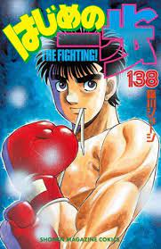

I LOVE bodybuilding. I discover it during the COVID crisis thanks to my big brother and from now, I go to gym everyday. It permit me to improve my motivation in other domains like in my classwork!I also love the bodybuilding competition so I love the Barbend website for this type of news
I like walking everyday, also read mangas or anatomy atlas. I also enjoy play video games with my brother, going to gym with my sister and play with my dog
My passion is reading mangas above all else. I particularly love the sports mangas like "Kuroko no Basket" or "Haikyu". But my favorite book remains, above all, "is Hajime no Ippo" of George Morikawa. Otherwise, I also like to learn the body anatomy by improving the efficiency of my bodybuilding's sessions
As a first-year student at IESEG School of Management and an aspiring entrepreneur, my ambitions are set high. I aim to cultivate a strong foundation in business management, honing my skills in strategy, marketing, and finance. Simultaneously, I plan to leverage my entrepreneurial spirit to explore innovative opportunities, create valuable ventures, and make a lasting impact on the business world. IESEG's dynamic environment and diverse resources will be instrumental in achieving these goals.
Here is my CV (French version)